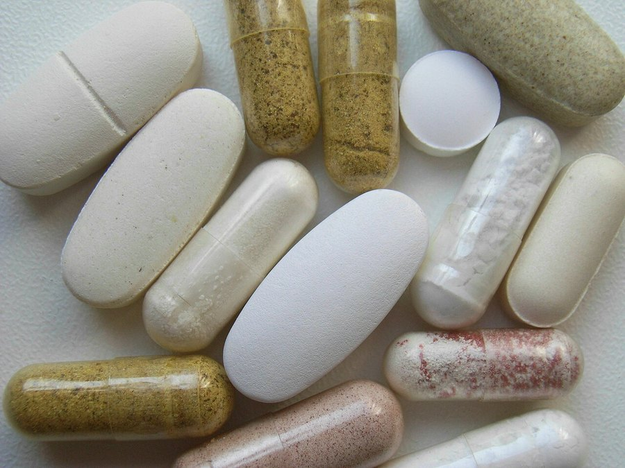

NAC (N-Acetylcysteine) and Brain Health: What the Evidence Supports
N-acetylcysteine has a long medical track record for one thing, and a much newer, thinner one for cognitive and mood-related claims.

Key takeaways
- NAC's best-established use is medical, as the antidote for acetaminophen overdose and a mucus thinner in respiratory conditions, not as a brain supplement.
- Its proposed brain mechanism is boosting glutathione, the body's main antioxidant, which matters because oxidative stress is involved in several neurological conditions.
- The psychiatric research is the most developed cognitive-adjacent evidence, mainly in addiction and some mood and compulsive-behavior studies, and results are mixed rather than uniformly positive.
- Direct evidence for memory or everyday cognitive performance in healthy adults is thin, mostly small or preliminary studies.
- Typical studied doses run 600-2,400 mg daily, and NAC is generally well tolerated, with stomach upset the most common complaint.
N-acetylcysteine, usually shortened to NAC, has one of the odder reputations in the supplement world. Walk into a hospital and it's a genuine lifesaver, the standard antidote for acetaminophen overdose. Walk into a supplement shop and it's marketed as a brain and mood booster. Both things can be true about the same molecule without the second claim having anywhere near the evidence of the first.
What is NAC and why would it affect the brain?
NAC is a modified form of the amino acid cysteine. Its main biological role is as a building block for glutathione, the body's most abundant internal antioxidant. Glutathione helps neutralize free radicals and manage oxidative stress, a process implicated in aging and in several neurological and psychiatric conditions. The logic behind NAC as a brain supplement is straightforward: raise glutathione, reduce oxidative damage, support neurons. The logic is reasonable. Confirming it does what's intended in a living human brain, and that doing so translates into measurably better memory or mood, is the harder part.
What does NAC actually have strong evidence for?
The strongest evidence for NAC isn't about the brain at all. It's used clinically, often intravenously, as the standard treatment for acetaminophen (paracetamol) overdose, where it's genuinely effective at preventing liver failure. It also has a long record as a mucolytic, thinning mucus in chronic respiratory conditions. These uses are well established, well studied and not really in dispute. They're also a different question from whether an oral NAC supplement does anything for memory or focus in an otherwise healthy person.
What about the psychiatric and addiction research?
This is where most of NAC's cognitive-adjacent evidence actually lives. Researchers have studied NAC fairly extensively in addiction, particularly for reducing cravings in substance use disorders, and in some psychiatric contexts including depression, obsessive-compulsive symptoms and trichotillomania. Results across these trials are mixed. Some studies report meaningful benefit, others find little difference from placebo, and reviews pooling the data tend to describe the evidence as promising but inconsistent rather than settled. This body of research is closer to NAC's genuine cognitive relevance than the general brain-health marketing suggests, and it's still not a clean, confirmed story.
COMPLEX
The memory formula we rate highest in 2026
One formula combined a fully transparent, clinically-dosed label — citicoline, bacopa, phosphatidylserine and B-vitamins — with a 60-day guarantee.
See Today's Price →Does NAC improve memory or focus in healthy people?
Direct evidence here is thin. Most of what exists comes from small trials, studies in clinical populations such as schizophrenia or bipolar disorder where cognitive symptoms are part of the condition, or animal research that doesn't automatically translate to humans. There isn't a solid base of large trials showing NAC improves memory, attention or processing speed in healthy adults without an underlying condition. Anyone selling NAC specifically as a memory enhancer for a healthy brain is extending the evidence further than it currently goes.
What dose do studies typically use?
Oral doses in clinical and psychiatric trials commonly range from about 600 to 2,400 milligrams daily, often split into two doses. That's considerably more than a lot of general multi-ingredient supplements include, if they include NAC at all. As with most ingredients discussed on this site, if a blend doesn't disclose the actual milligram amount, there's no way to know whether it's anywhere near a studied dose.
Is NAC safe to take?
NAC has a reasonably good safety profile across its studied uses, including at the higher psychiatric-trial doses. The most common complaints are gastrointestinal, nausea, stomach discomfort or diarrhea, particularly at higher doses. It's generally considered well tolerated for short to medium-term use. People on blood thinners, nitroglycerin, or with asthma should talk to a doctor before starting NAC, since there are some documented interaction and bronchospasm concerns in specific circumstances. As always, pregnant or breastfeeding people and anyone on prescription medication should check with a physician first.
How does NAC's antioxidant angle compare to other brain ingredients?
NAC's proposed mechanism, raising glutathione to blunt oxidative stress, puts it in a similar conceptual category to other antioxidant-focused ingredients, though the specific pathways differ. Our piece on seed oils and brain health covers a different angle on oxidative and inflammatory processes in the diet. None of these ingredients, NAC included, has evidence strong enough to call it a proven way to slow cognitive aging in healthy people. Oxidative stress is a real and active area of brain-health research. That doesn't mean every antioxidant supplement that targets it has already proven its case in humans.
Why not just take glutathione directly?
This question comes up often, and the short answer is absorption. Glutathione taken orally breaks down in the digestive tract before much of it reaches the bloodstream intact. NAC is smaller, more stable, and crosses into cells where the body can use it to build glutathione from scratch. That's the entire rationale for taking a glutathione precursor instead of glutathione itself. It's a reasonable workaround for a real absorption problem, though it still depends on the body actually converting NAC into glutathione efficiently, which can vary between individuals and hasn't been mapped out in detail for brain tissue specifically.
Liposomal and other specialty glutathione formulations claim better absorption, but the comparative evidence against NAC for brain-related outcomes is sparse either way.
So is NAC worth taking for brain health?
If you're interested in the addiction or compulsive-behavior research, that's a conversation to have with a doctor or psychiatrist familiar with the specific studies and your situation, not a decision to make from a bottle label. If you're a generally healthy adult hoping for a noticeable memory or focus boost, the current evidence doesn't give much reason to expect one. NAC's real, well-documented value is medical. Its brain-health marketing is riding on a plausible mechanism and a handful of mixed psychiatric trials, which is a thinner foundation than the way it's often sold. For habits with a broader evidence base, our guide to improving memory is a more reliable place to start.
Frequently asked questions
What is NAC used for medically?
NAC's best-established use is as the standard antidote for acetaminophen overdose, and it's also used as a mucus thinner in chronic respiratory conditions. Both uses are well studied and widely accepted in medicine.
Does NAC help with memory or focus?
Direct evidence in healthy adults is thin, mostly small or preliminary studies. The more developed research is in psychiatric and addiction contexts, and even there results are mixed rather than uniformly positive.
What dose of NAC is used in studies?
Clinical and psychiatric trials commonly use 600 to 2,400 milligrams daily, often split into two doses, which is more than many general supplement blends disclose.
Is NAC safe to take daily?
It's generally well tolerated, with stomach upset the most common side effect. People on blood thinners, nitroglycerin, or with asthma should check with a doctor first, as should anyone pregnant, breastfeeding or on prescription medication.
Is NAC the same as other antioxidant brain supplements?
It works through a different specific pathway, raising glutathione, but shares the broader idea of targeting oxidative stress. Like most antioxidant ingredients marketed for the brain, its evidence in healthy adults is still limited.
Want ingredients with a clearer cognitive evidence base?
NAC's strongest evidence is medical, not cognitive. See the memory formulas our editors rate highest for 2026 for ingredients with more direct research behind them.
See the Top 5 Memory Formulas →Related: Seed oils and brain health · Creatine and cognition · How to improve your memory · Best memory formulas of 2026